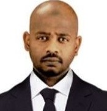

محمد عبدالباقي الريح
مهندس حاسوب واختصاصي تقنية معلومات بشركة الزقزوق للأجهزة المنزلية | إدارة الأنظمة | البنية التحتية الذكية | طالب دكتوراه في الأمن السيبراني بجامعة Islamic University of Minnesota
الملخص المهني
اختصاصي تقنية معلومات ومهندس حاسوب وشبكات بخبرة تزيد عن 15 عامًا في الدعم الفني، إدارة البنية التحتية لتقنية المعلومات، إدارة الشبكات، صيانة الأنظمة، وأساسيات الأمن السيبراني. أمتلك خبرة في تركيب، إعداد وصيانة أنظمة الحاسب، الشبكات، الخوادم، أنظمة التشغيل، حماية الأجهزة الطرفية، النسخ الاحتياطي، الجدران النارية، وإدارة صلاحيات المستخدمين.
طالب دكتوراه في الأمن السيبراني بجامعة Islamic University of Minnesota، 2025 - حتى الآن، مع اهتمام قوي بالأمن السيبراني، حماية أنظمة المعلومات، تأمين البنية التحتية، والعمليات الأمنية العملية.
أتمتع بقدرة مثبتة على تحليل وحل المشكلات التقنية المعقدة، دعم المستخدمين، تحسين الكفاءة التشغيلية، والتنسيق مع الإدارات المختلفة لتقديم خدمات تقنية موثوقة. لدي خبرة في قيادة الفرق، تخطيط البنية التحتية، تدريب المستخدمين، التوثيق الفني، التنسيق مع الموردين، والحفاظ على بيئات تقنية مستقرة وآمنة.
أبرز المسارات المهنية
- أكثر من 15 عامًا من الخبرة المهنية في الدعم الفني، البنية التحتية، هندسة الشبكات، وإدارة الأنظمة.
- إدارة البنية التحتية لتقنية المعلومات عبر عدة فروع.
- تحسين مراقبة أمن الأجهزة الطرفية من خلال الاستخدام العملي لأدوات الأمن والمراقبة.
- معرفة عملية بأساسيات الأمن السيبراني، بما في ذلك الجدران النارية، مضادات الفيروسات، حماية الأجهزة الطرفية، التحكم في الوصول، النسخ الاحتياطي، وتقوية الأنظمة.
- خبرة في التدريس الأكاديمي، التدريب الفني، الإرشاد، وإعداد المواد التعليمية المتعلقة بتقنية المعلومات.
مجالات الخبرة
المهارات الأساسية
- إدارة الشبكات: TCP/IP, DNS, DHCP, LAN/WAN, VPN
- إدارة أنظمة Windows و Linux
- Active Directory و Group Policy وإدارة حسابات المستخدمين
- حماية الأجهزة الطرفية، الجدران النارية، مضادات الفيروسات، والنسخ الاحتياطي
- VMware و Hyper-V و VMware ESXi
- Wazuh و Suricata و Microsoft Defender و ClamAV
الإنجازات الرئيسية
- دعم وصيانة العمليات التقنية عبر الإدارات المختلفة.
- إدارة البنية التحتية لتقنية المعلومات عبر عدة فروع.
- تحسين مراقبة أمن الأجهزة الطرفية باستخدام أدوات مثل Wazuh, Suricata, Microsoft Defender, ClamAV, VMware ESXi.
- المشاركة في تخطيط البنية التحتية، التوثيق الفني، تنسيق المشتريات، والتواصل مع الموردين.
التعليم
- طالب دكتوراه في الأمن السيبراني - Islamic University of Minnesota 2025 - حتى الآن
- ماجستير في الأعمال الدولية - جامعة أميتي، نويدا، دلهي، الهند نوفمبر 2017
- بكالوريوس في تقنية المعلومات - جامعة أميتي، نويدا، دلهي، الهند ديسمبر 2013
- دبلوم ثلاث سنوات في هندسة الحاسب - جامعة بحري، الخرطوم، السودان يونيو 2006
الخبرات العملية
اختصاصي تقنية معلومات أكتوبر 2017 - حتى الآن
- تركيب، إعداد وصيانة أجهزة الحاسب، أنظمة التشغيل، تطبيقات الأعمال، الطابعات، وتقنيات المكتب.
- مراقبة ودعم وصيانة أنظمة الحاسب، الشبكات، وأجهزة المستخدمين.
- إنشاء وإدارة حسابات المستخدمين، كلمات المرور، الصلاحيات، وضوابط الوصول.
- الحفاظ على أمن تقنية المعلومات من خلال التحديثات، النسخ الاحتياطي، مضادات الفيروسات، حماية الأجهزة الطرفية، ودعم الجدران النارية.
محاضر تقنية معلومات يناير 2016 - أبريل 2017
- تقديم المحاضرات والجلسات العملية في مواد تقنية المعلومات.
- إعداد المواد التعليمية، الخطط الأكاديمية، التقييمات، والامتحانات.
رئيس قسم البنية التحتية والدعم الفني يناير 2014 - يناير 2017
- الإشراف على فريق الدعم الفني المسؤول عن الشبكات والأنظمة والعمليات.
- تخطيط وإدارة البنية التحتية لتقنية المعلومات، الاتصالات، وعمليات مركز البيانات.
مهندس حاسوب وشبكات يناير 2011 - ديسمبر 2014
- تصميم، تنفيذ وصيانة بيئات شبكات LAN و WAN.
- تطبيق سياسات أمن الشبكات ومراقبة ضوابط الوصول.
مهندس حاسوب وشبكات أبريل 2008 - ديسمبر 2010
- تركيب، إعداد وصيانة أنظمة الحاسب، الشبكات، أنظمة التشغيل، والبرمجيات.
- تقديم الدعم الفني وتدريب المستخدمين.
التطوير المهني
- دبلوم في تصميم وإدارة وتركيب وصيانة الشبكات - يناير 2010
- كورس CCNA طويل المدة - مارس 2010
- دورة تدريبية في IPv6 - أكتوبر 2011
- دبلوم في صيانة الحاسب والشبكات - فبراير 2014
- أساسيات إدارة وتشغيل نظام Linux - Red Hat - مارس 2014
- دورة في الإشراف الأكاديمي - يناير 2017
اللغات
- العربية: اللغة الأم
- الإنجليزية: جيد
التواصل
الجوال: +966550857011
البريد الإلكتروني: mohmd.bagi@hotmail.com
المراجع
المراجع متاحة عند الطلب.